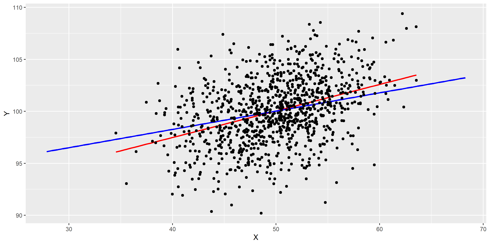

Internal and external validity of regression studies
Goal of this study
Internal versus External Validity
Testing for Heteroskedasticity
A statistical analysis has internal validity if the statistical inference made about causal effects are valid for the considered population.
An analysis is said to have external validity if inferences and conclusion are valid for the studies’ population and can be generalized to other populations and settings.
Internal and External Validity of Regression
Internal validity is satisfied if the statistical inference about the causal effects are valid for the population being studied.
External validity would need the inferences and conclusions to be generalized from the population and setting studied to other populations and setting
Example: Think about the california test example.
Is the slope, \(\beta\)str , unbiased and consistent?
Is this a valid estimate for NY?, WV?, NM?,. . .
Threats to internal validity
Omitted Variable Bias
Misspecification of Functional Form of Regression Model
Measurement Error
Missing Data and Sample Selection
Simultaneous Causality In each case, OLS assumption [\(#1\)]{yellow} is violated:\(E(u_i| X_{1i}, X_{2i}, \dots,X_{ki})\neq 0.\)
Omitted variable bias
If you have the data for omitted variables:
Be specific about your coefficient of interest.
Use a priori reason for adding variables.
Use statistical tests for questionable variables (t and F).
Provide all the potential specifications in tabular form.
What if you don’t have the data:
Panel data (next chapter)
IV method (chapter 12)
Randomized control experiments
Misspecification of Functional Form of Regression Model
For continuous dependent variable: Use methods discussed in chapter 8 to modify functional forms.
For discrete or binary dependent variable: Chapter 11 (we will get there. . . ).
Lets our model is \(Y_i = X_i^2\) but one uses \(Y_i=\beta_0+\beta_1X_{1i}+u_i\)
# set seed for reproducibilityset.seed(5)library(tidyverse)# simulate data setX <-runif(100, -5, 5)Y <- X^2+rnorm(100)df<-cbind(X,Y)df<-as.data.frame(df)
Code
# estimate the regression functionms_mod <-lm(Y ~ X)ms_mod
Code
# set seed for reproducibilityset.seed(5)library(tidyverse)# simulate data setX <-runif(100, -5, 5)Y <- X^2+rnorm(100)df<-cbind(X,Y)df<-as.data.frame(df)# estimate the regression functionms_mod <-lm(Y ~ X)ms_mod## ## Call:## lm(formula = Y ~ X)## ## Coefficients:## (Intercept) X ## 9.017 0.435
General regression model: \(Y_i = \beta_0 + \beta_1X_{i} + u_{i}\) What you would like to measure is \(X_i\), but what you do actually measure is \(\overset{\sim}{X}_i\). Then the error is \(X_i - \overset{\sim}{X}_i\)
where here \(\overset{\sim}{X}_i\) and \(v_i\) are correlated resulting to slope coefficient \(\hat{\beta_1}\) to be biased.
The classical measurement error model assumes that the measurement error, \(w_i\), has zero mean and that it is uncorrelated with the variable, \(\overset{\sim}{X}_i\), and the error term of the population regression model, \(u_i\): \(\begin{equation} \overset{\sim}{X}_i = X_i + w_i, \ \ \rho_{w_i,u_i}=0, \ \ \rho_{w_i,X_i}=0 \end{equation}\) This holds \(\begin{equation} \widehat{\beta}_1 \xrightarrow{p}{\frac{\sigma_{X}^2}{\sigma_{X}^2 + \sigma_{w}^2}} \beta_1 \tag{9.1} \end{equation}\)
\(\sigma_{X}^2, \sigma_{w}^2 > 0\) so \(\hat{\beta_1}\) smaller than 1.
If there is no measurement error, \(\sigma_{w}^2=0\) such that \(\widehat{\beta}_1 \xrightarrow{p}{\beta_1}\) .
If \(\sigma_{w}^2 \gg \sigma_{X}^2\) we have \(\widehat{\beta}_1 \xrightarrow{p}{0}\)
This is the case if the measurement error is so large that there essentially is no information on \(X\) in the data that can be used to estimate \(\beta\).
\(\overset{\sim}{X_i} = X_i + w_i\)\(w_i \overset{i.i.d.}{\sim} \mathcal{N}(0,10)\)\(w_i\) is independent of \(x_i\).
Code
# set seedset.seed(1)# load the package 'mvtnorm' and simulate bivariate normal datalibrary(mvtnorm)dat <-data.frame(rmvnorm(1000, c(50, 100), sigma =cbind(c(10, 5), c(5, 10))))# set columns namescolnames(dat) <-c("X", "Y")
Plots
Code
# estimate the model (without measurement error)noerror_mod <-lm(Y ~ X, data = dat)# estimate the model (with measurement error in X)dat$X <- dat$X +rnorm(n =1000, sd =sqrt(10))error_mod <-lm(Y ~ X, data = dat)# print estimated coefficients to consolenoerror_mod$coefficients## (Intercept) X ## 76.300 0.476error_mod$coefficients## (Intercept) X ## 87.276 0.255
plot in ggplot2
Code
# estimate the model (with measurement error in X)dat$X1 <- dat$X +rnorm(n =1000, sd =sqrt(10))error_mod <-lm(Y ~ X, data = dat)ggplot(dat)+aes(X,Y)+geom_smooth(aes(X, Y), data = dat, method ="lm", se =FALSE, color ="red") +geom_smooth(aes(X1, Y), data = dat, method ="lm", se =FALSE, color ="blue") +geom_point()

Missing Data and Sample Selection
Missing at random: There is no bias, but it reduces our sample size.
Missing regressor values: Same as above.
Missing \(Y\) due to selection process (sample selection bias): For example of this type of bias, think about why older, say, baseball players are on average better than younger ones.
4. Sample Selection Bias
5. Simultaneous Causality
Simultaneous Causality Bias So far we have assumed that the changes in the independent variable \(X\) are responsible for changes in the dependent variable \(Y\) . When the reverse is also true, we say that there is simultaneous causality between \(X\) and \(Y\) . This reverse causality leads to correlation between \(X\) and the error in the population regression of interest such that the coefficient on \(X\) is estimated with bias.
Summary
Threats to Internal Validity of a Regression Study
The five primary threats to internal validity of a multiple regression study are:
Omitted variables
Misspecification of functional form
Errors in variables (measurement errors in the regressors)
Sample selection
Simultaneous causality
All these threats lead to failure of the first least squares assumption \(E(u_i\vert X_{1i},\dots ,X_{ki}) \neq 0\)
so that the OLS estimator is biased and inconsistent.
Furthermore, if one does not adjust for heteroskedasticity and/or serial correlation, incorrect standard errors may be a threat to internal validity of the study.
Uploaded data and required R packages
Data sets can be downloaded from Stock and Watson. We are working here with California Test School data used in Chapter 4-9. For further details, one may visit Nishant Yonzan page
Code
library(haven) ## To read data from STATA/SPSS we use *haven* packagecaschool<-read_dta("data/caschool.dta")maschool <-read_dta("data/mcas.dta")
Code
library(qwraps2) ## A collection of wrapper functions for reproducible reportsoptions(dplyr.width =Inf) # to force R to print all values# CA school mean and sdca_mean <-t(summarise(caschool,"Test Score"=mean(testscr),"Student-Teacher Ratio"=mean(str),"% English Learners"=mean(el_pct),"% Receiving Lunch Subsidy"=mean(meal_pct),"Average District Income ($)"=mean(avginc*1000),count=n()))ca_sd <-t(summarise(caschool,"Test Score"=sd(testscr),"Student-Teacher Ratio"=sd(str),"% English Learners"=sd(el_pct),"% Receiving Lunch Subsidy"=sd(meal_pct),"Average District Income ($)"=sd(avginc*1000),count=n()))
Code
# MA school mean and sdma_mean <-t(summarise(maschool,"Test Score"=mean(totsc4),"Student-Teacher Ratio"=mean(tchratio),"% English Learners"=mean(pctel),"% Receiving Lunch Subsidy"=mean(lnch_pct),"Average District Income ($)"=mean(percap*1000),count=n()))ma_sd <-t(summarise(maschool,"Test Score"=sd(totsc4),"Student-Teacher Ratio"=sd(tchratio),"% English Learners"=sd(pctel),"% Receiving Lunch Subsidy"=sd(lnch_pct),"Average District Income ($)"=sd(percap*1000),count=n()))##Table using kable:library(knitr)library(kableExtra)#### Attaching package: 'kableExtra'## The following object is masked from 'package:dplyr':#### group_rowskable(cbind(ca_mean,ca_sd,ma_mean,ma_sd),align ="c",digits =1,"html",booktabs =TRUE) %>%column_spec(2:5, width ="4em") %>%kable_styling(bootstrap_options ="striped", full_width =FALSE) %>%add_header_above(c(" ", "Average"=1, "SD"=1, "Average"=1, "SD"=1)) %>%add_header_above(c(" " , "California"=2, "Massachusetts"=2)) %>%row_spec(5,hline_after =TRUE)
California
Massachusetts
Average
SD
Average
SD
Test Score
654.2
19.1
709.8
15.1
Student-Teacher Ratio
19.6
1.9
17.3
2.3
% English Learners
15.8
18.3
1.1
2.9
% Receiving Lunch Subsidy
44.7
27.1
15.3
15.1
Average District Income ($)
15316.6
7225.9
18746.8
5807.6
count
420.0
420.0
220.0
220.0
Multiple Regression
Code
# load packageslibrary(lmtest)library(sandwich)
Create binary variable for HiEL and also squares and cubes of str variable.